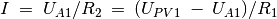
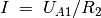
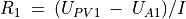
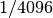

Mesurer des résistances par comparaison¶
Objectif
Apprendre à appliquer la loi d’Ohm pour trouver le valeur d’une résistance inconnue par comparaison avec une résistance connue. La tension aux bornes d’une résistance est donnée par . Si la même valeur de courant parcourt deux résistances différentes, alors le rapport des tensions sera le même que le rapport des résistances, .

Procédure
- Connecter la résistance inconnue R entre PV1 et A1.
- Connecter
 (
( ) entre A1 et GND.
) entre A1 et GND. - Régler PV1 à 4 V.
- Mesurer la tension en A1. Calculer le courant . Valeur de .
- Sélectionner « Électricité->Tracé d’une courbe courant-tension » dans le menu pour obtenir une courbe I-U.
Discussion
Quelle est la limitation de cette méthode ? Comment choisir la
résistance de référence ? Si on suppose que la valeur inconnue est en
, quelle serait la chute de tension aux bornes d’une résistance de
référence de ? Notre mesure de tension a une résolution de
.
On utilisera cette méthode plus tard pour mesurer la résistance de solutions, à l’aide de courant alternatif.